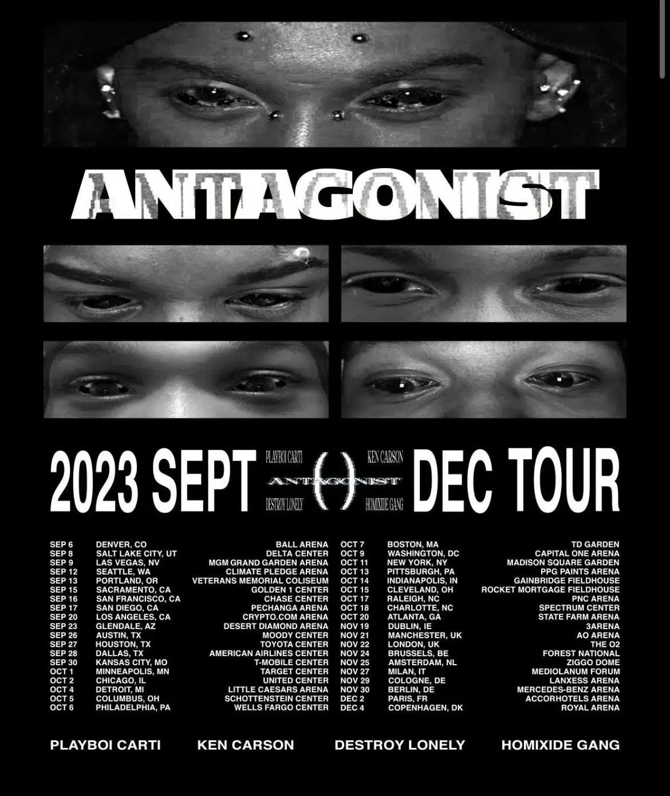
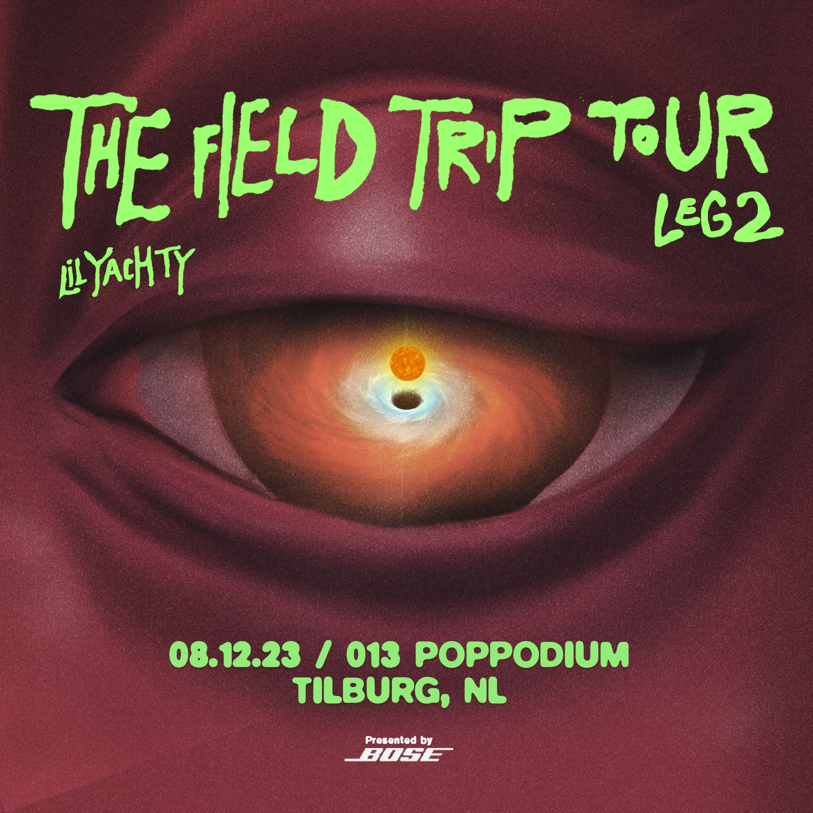
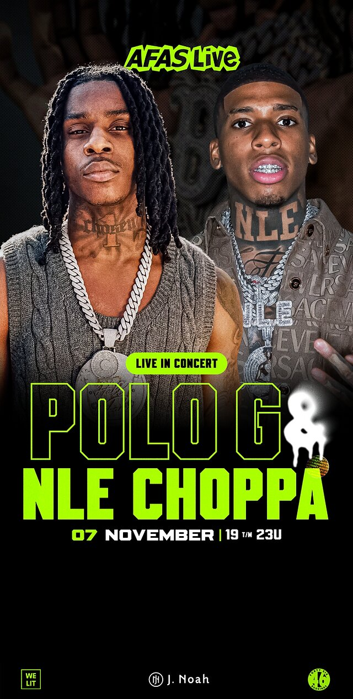

Toekomstige hiphop tours, concerten en festivals
Antagonist tour
Playboi Carti samen met zijn labelgenoten Ken Carson, Destroy Lonely en Homixide Gang, die voor het eerst de weg op gaan als Opium Collective staan op zaterdag voor het eerst in de Ziggo Dome! De kaartverkoop loopt via Ticketmaster.
The Field Trip Tour
Lil Boat, beter bekend als Lil Yachty, komt naar 013 poppodium in Tilburg voor een exclusieve Nederlandse show! De rapper combineert feel-good positiviteit en wilde Atlanta-esque flair in een stijl die hij bubblegum trap noemt, en scoorde hiermee zijn eerste platina single met ‘One Night’ (2016).
AFAS Live
Amerikaanse Supersterren Polo G en NLE Choppa Samen op Één Podium voor een exclusieve show in Amsterdam's AFAS Live. Een ongeëvenaarde muzikale ervaring staat op het punt Amsterdam te veroveren, want Amerikaanse rap-iconen Polo G en NLE Choppa bundelen hun krachten voor een spectaculair optreden in de befaamde AFAS Live op Dit evenement belooft een avond vol sensationele muziek en opwinding.
